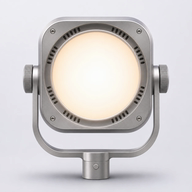
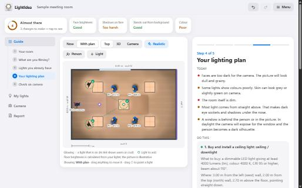
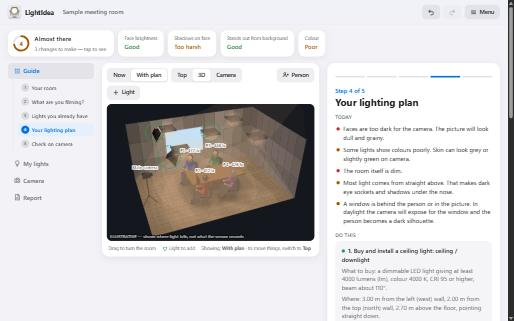

LightIdea plans and checks the lighting for video calls, interviews and recordings. You describe your room; it tells you what to change, what to buy and where to put it. No lighting knowledge needed.
Open the appFree · works offline · nothing to install or sign up for
Faces too dark, flat or harsh shadows, mixed warm and cool lamps, a window behind the speaker. Each one is explained in plain words.
A numbered to-do list: re-aim the lights you already own first, then what to buy, where to mount it, where to point it and how bright to set it.
A top-down plan, a realistic view of light on the floor, a 3D view you can turn, and a view from the camera's position.
Take a test photo and the app points out burnt-out areas, lost shadows and uneven faces, with one thing to do about each.


Measure the length, width and ceiling height with a tape and type them in.
Pick the closest match, such as one person talking to the camera or a meeting table. People and camera are placed for you; drag them to where they really are.
Drag each light to its place and copy two numbers from the lamp or its box: lumens (how bright) and Kelvin (how warm or cool).
Read what is wrong today, then work through the to-do list. The status ring at the top fills as problems are solved.
Set the camera as the app suggests, take a test shot in the Camera tab, and fine-tune the dimmers.